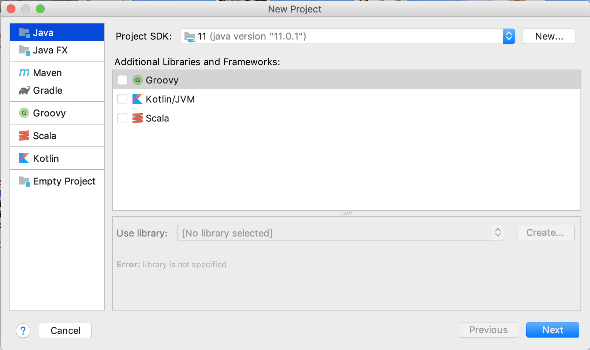
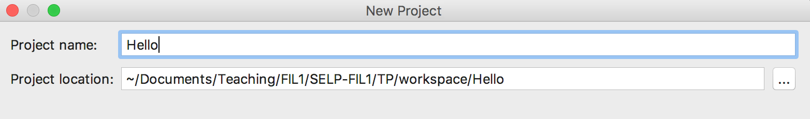
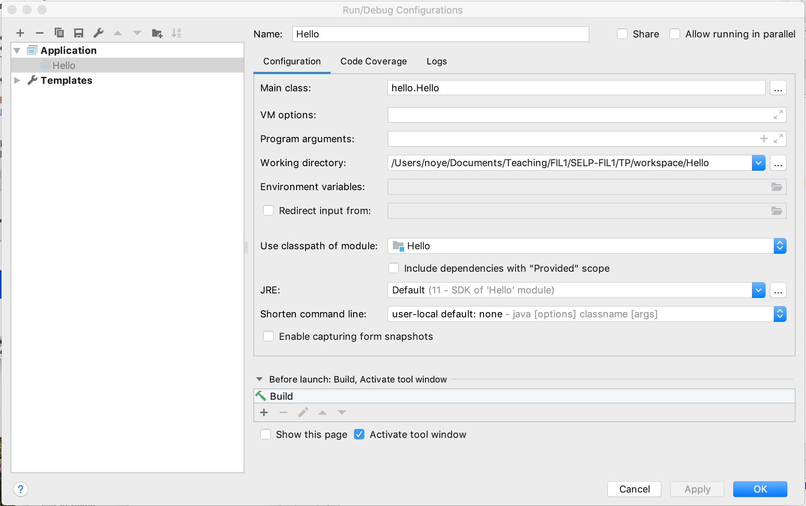
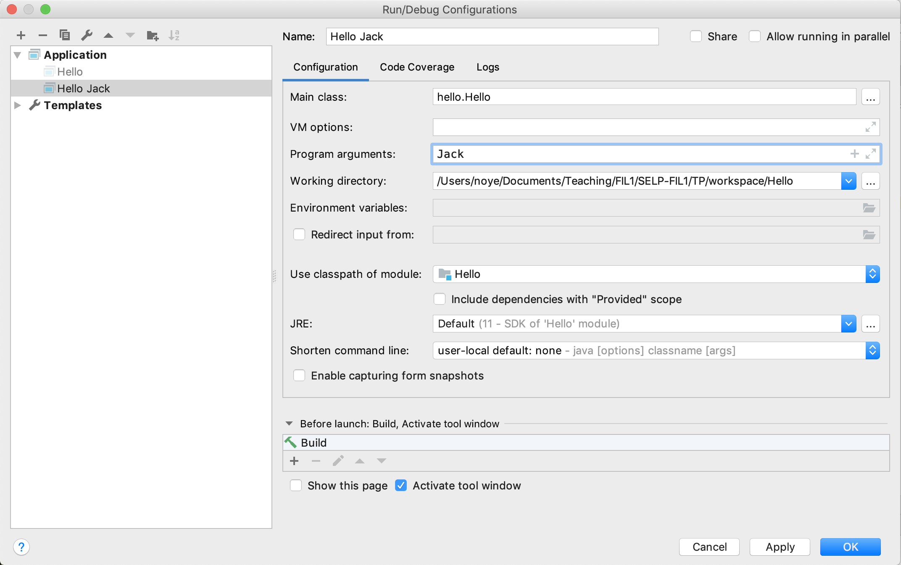
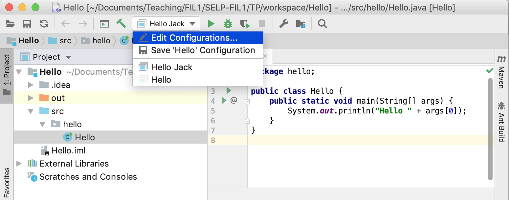

Prise en main d'IntelliJ
Table des matières
1 Installer l'IDE
- Téléchargez, installez et démarrez IntelliJ IDEA (Community Edition).
- La phase de configuration (Setup) dépend du système d'exploitation
cible. Choisissez d'ajouter un icone pour démarrer l'application si
on vous le propose (vous pourrez toujours l'effacer ensuite).
Vous pouvez sauter la personnalisation des Featured Plugins.
- Linux : il peut être utile de créer un script de lancement (Launcher Script) si vous voulez lancer l'IDE à partir d'un terminal.
- Windows : cochez l'association avec les fichiers
.javaet le téléchargement et l'installation du JRE JetBrains (Java Runtime Environment), utilisé pour exécuter l'IDE. Choisissez le type du script de lancement suivant votre configuration matérielle (32 ou 64 bits).
L'interface peut légèrement varier d'un environnement à l'autre (linux, macOS, Windows). Les captures d'écran qui suivent ont été réalisées dans un environnement macOS.
2 Créer un projet et une application Hello
- Create new project :
Hello Choisissez un projet Java (à gauche) et définissez le SDK Java que vous voulez utiliser. Initialement, le bouton
Newpermet de le sélectionner dans vos répertoires. Par exemple (installation standard Windows avec Java 11) :C:\Program Files\Java\jdk-11.0.1ou encore (installation standard macOS)/Library/Java/JavaVirtualMachines/jdk-11.0.1.jdk/Contents/Home. En cas de besoin, une version open source de Java 11 peut être téléchargée via http://jdk.java.net/11/.
Vous pouvez sauter la page suivante, puis définissez le nom du projet et son emplacement.

- Comme avec eclipse, sélectionner le répertoire
srcet créez un nouveau paquetage (New package)hellopuis une nouvelle classe (New Java Class)Hello. - Une fois le curseur placé au niveau du corps de la méthode, la
commande Insert Live Template (menu Code) vous permet de créer
un squelette de point d'entrée à compléter
System.out.println(...). - Notez qu'il n'est pas nécessaire de sauver le fichier.
Positionnez-vous par exemple sur out et utilisez le raccourci clavier pour Editing - Quick
documentation lookup (cf Help > Keymap Reference ou Help > Find Action dans la barre des
menus, associée à toute fenêtre).
3 Exécuter l'application
Sélectionner la classe Hello dans l'explorateur + clic contextuel et
commande Run Hello.main() ou sélectionner un triangle vert dans la
marge de la fenêtre d'édition.
4 Ajouter des arguments
On veut maintenant ajouter un argument en ligne de commande, le nom de la
personne à saluer. La valeur à afficher est "Hello" + args[0].
Mettre à jour la classe en conséquence. Une exécution Run ne marche pas. Il manque l'argument. Celui-ci peut être donné en créant une configuration d'appel via le menu Run et la commande Edit Configurations. Suite à la première exécution, une configuration
Hellopréexiste :
Elle peut être dupliquée et complétée notamment en ajoutant l'argument :

La configuration peut ensuite être exécutée via un clic contextuel, via le triangle vert de la barre des outils (Toolbar), via les triangles verts dans la marge ou via la commande Run de la barre des menus, qui donne accès à l'ensemble des configurations.
L'ancienne configuration peut être retrouvée via la barre des outils.

5 Pour en savoir plus sur l'IDE
Essayez dans la barre des menus : Help > Getting Started. Voir notamment :